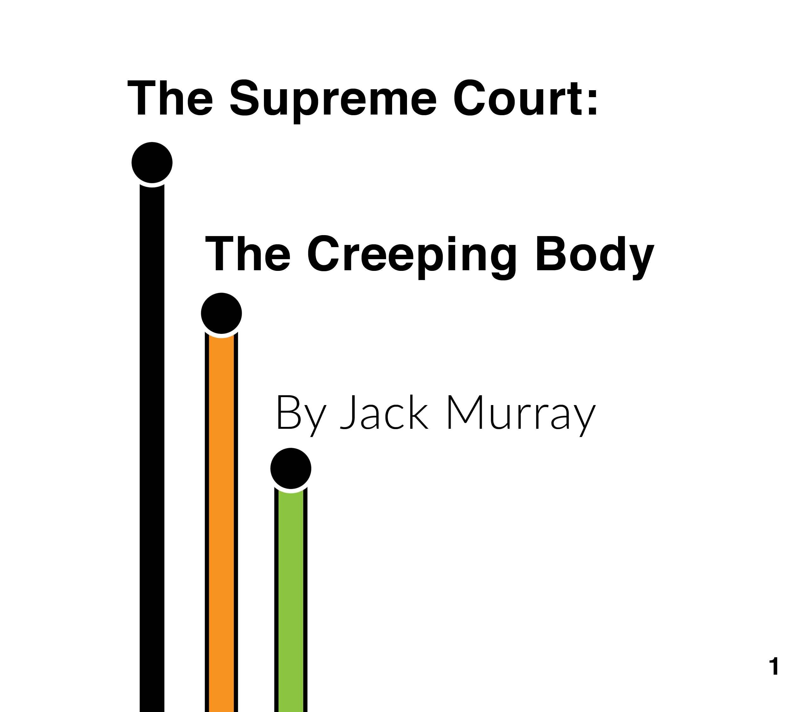
Political Science · Editorial Design · Research
A long-form political analysis examining campaign finance, constitutional tradition, and how the Supreme Court has evolved into an unchecked policy-making body.
The Brief
Legal cases are some of the most impactful and least understood pieces of political action. Even through writing, it is difficult to convey the impact and course of events that lead to these apolitical bodies creating unwritten laws. By making cases more digestible through mapping and compartmentalizing larger essays, the goal was to allow more readers to understand the value and danger these legal bodies possess.
The project spans four essays covering campaign finance law, the Supreme Court’s use of “history and tradition,” the Court as a political body, and a full case analysis of United States v. Rahimi — all designed as a cohesive editorial piece.
The Challenge
Constitutional law is dense, and the interconnections between campaign finance, judicial philosophy, and democratic erosion are rarely presented together. The challenge was to create a publication that is both rigorous enough for academic review and visually compelling enough to engage a general audience.
The design needed to carry the weight of legal citations and historical timelines while maintaining a clean, modern editorial voice — making complex jurisprudence feel urgent and accessible.
Process
The process began with type exploration — looking at thinner, more modern fonts to give the text more legibility, a key component when dealing with dense legal language. Helvetica was examined across its full weight range before landing on the final type system. Aesthetic inspiration drew from information design precedents like the NYC Subway Map and data visualization work from Polling Canada, as well as the formal language of curves in modern architecture and furniture design.
Material selection was driven by the small format of the book. A stitched binding was chosen for durability at the compact size, paired with semi-gloss paper printed on A3 and trimmed down — similar in feel to a magazine, keeping the publication approachable and tactile.
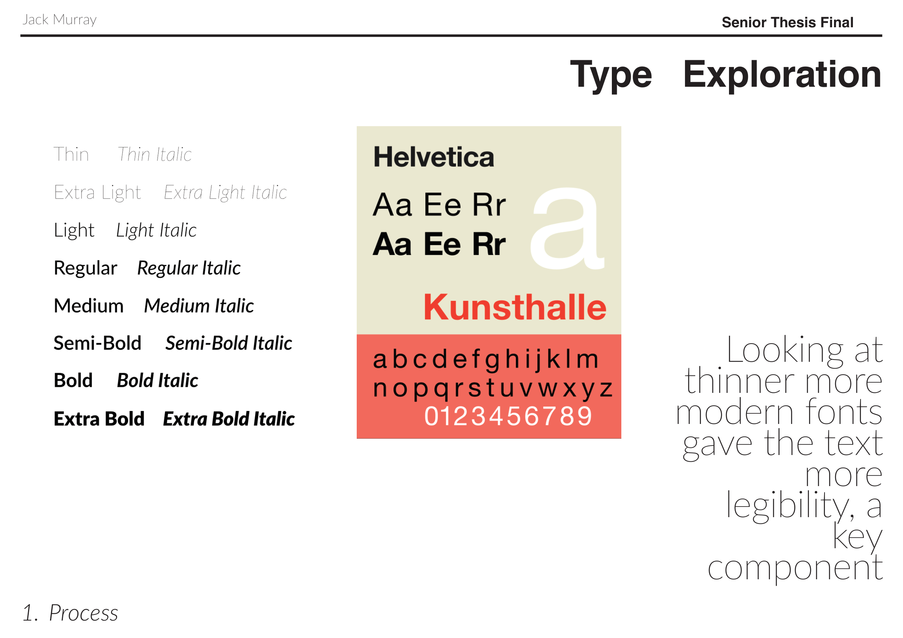
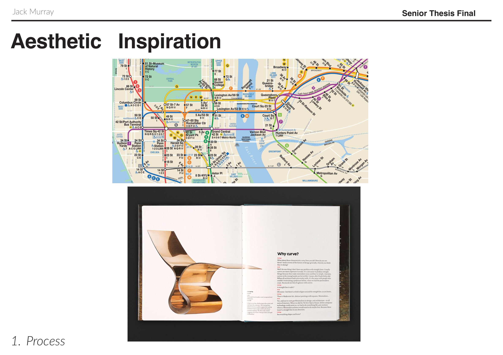
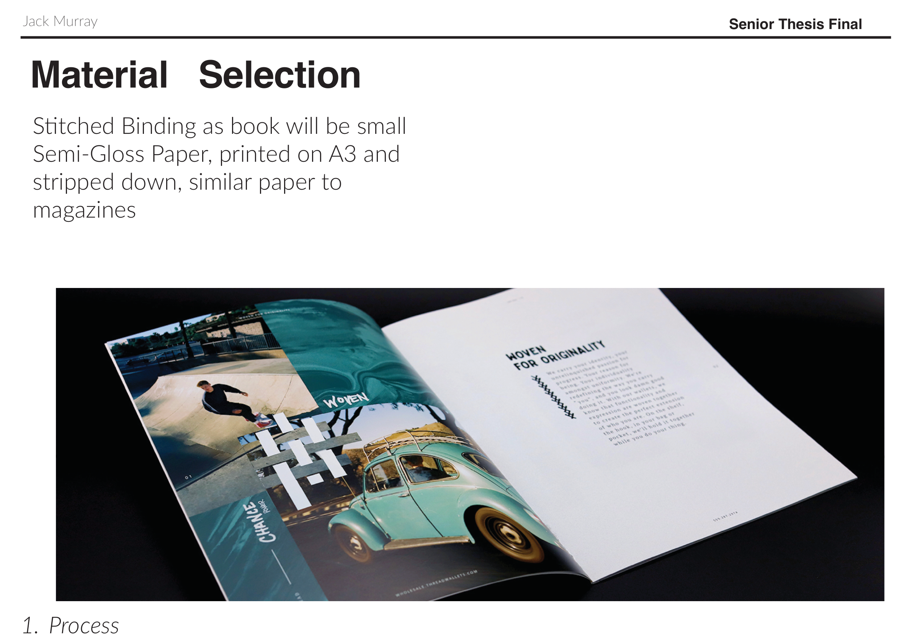
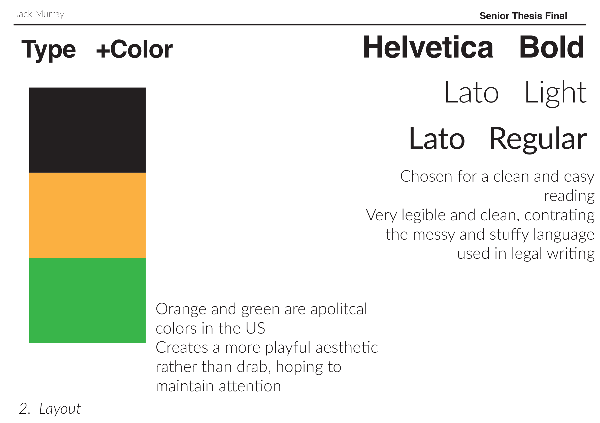
Design process — type exploration, aesthetic references, material selection, and color system
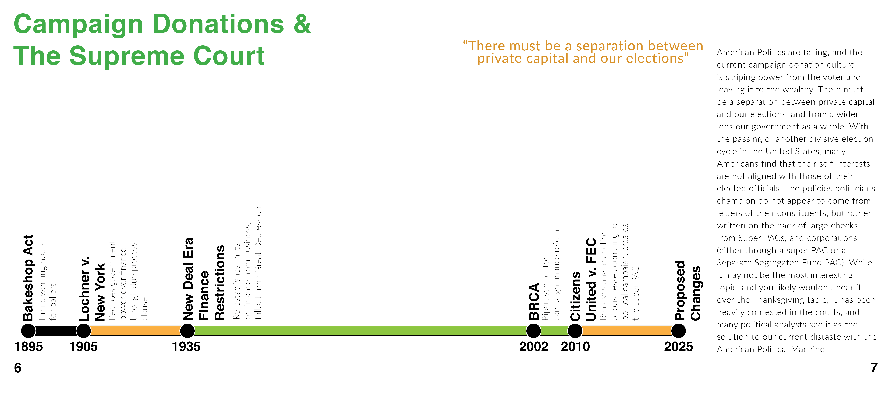
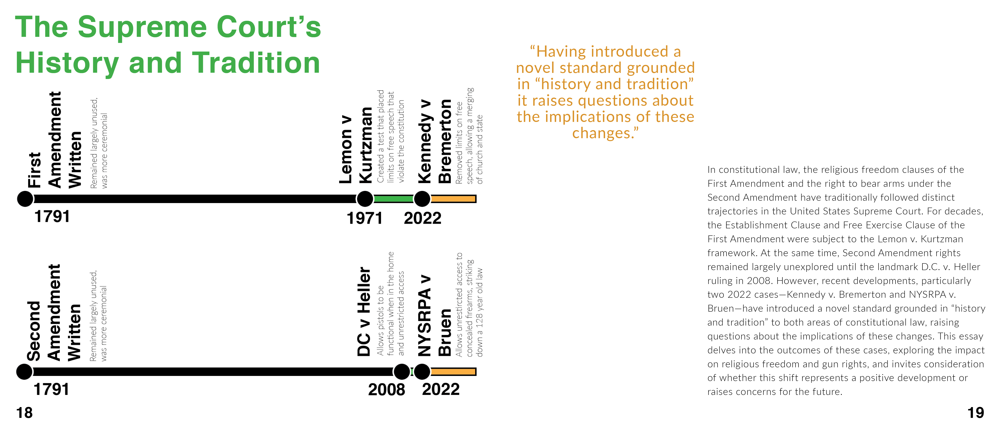
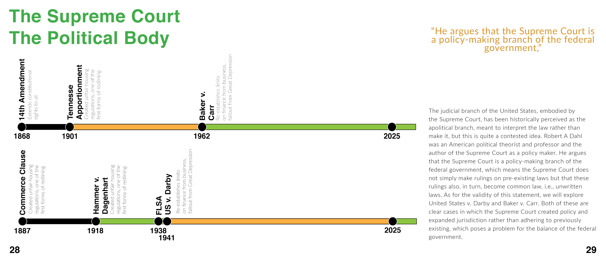
Select spreads — timeline design and chapter openers
Layout
The publication uses a custom 8.5″ × 9.5″ page size, allowing for more open space and legibility than a standard format. The grid system is built on 5 columns with 0.25″ gutters and 3 rows with 0.1667″ gutters, with margins of 0.25″ on the top and sides and 0.6875″ on the bottom.
Typography pairs Helvetica Bold for headlines with Lato Light and Lato Regular for body text — chosen for clean, easy reading that contrasts the messy and stuffy language used in legal writing. The color palette centers on orange and green, deliberately apolitical colors in the US context, creating a more playful aesthetic rather than drab, hoping to maintain the reader’s attention across dense material.
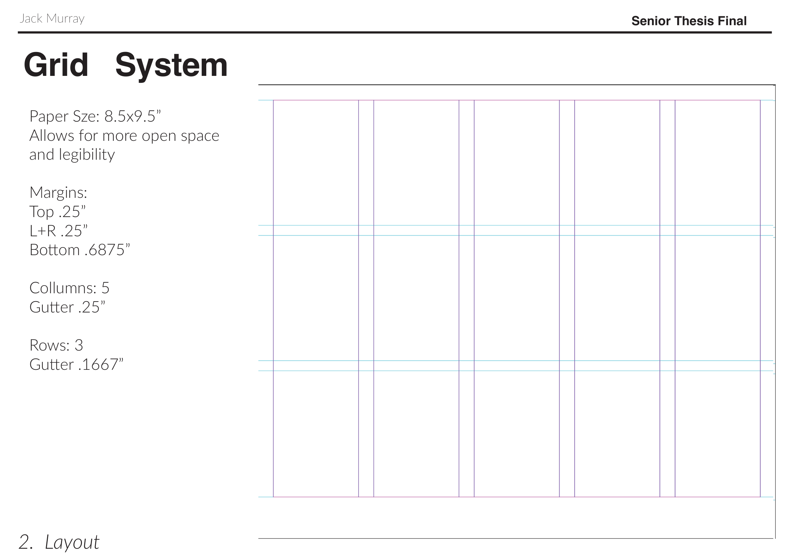
Grid system — 5-column, 3-row structure on custom 8.5″ × 9.5″ page
The Approach
The publication traces the evolution of corporate influence in American politics from the Bakeshop Act of 1895 through Citizens United and into the present. Each chapter builds on the last — moving from campaign finance history to judicial philosophy to the Court’s expanding jurisdiction.
The design system uses a visual language of colored timelines (black, orange, green) to map legal history across eras. Pull quotes break up dense analysis, and each chapter opens with a full-bleed timeline spread that orients the reader in time before diving into argument.
The final section presents a full IRAC-style case analysis of United States v. Rahimi, connecting the theoretical arguments of the first three chapters to a live Supreme Court case.
Deliverables
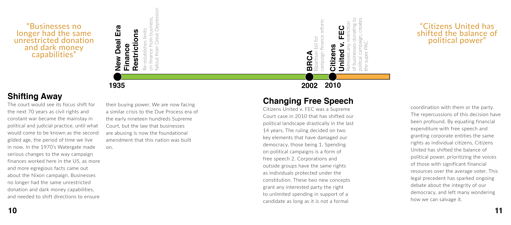
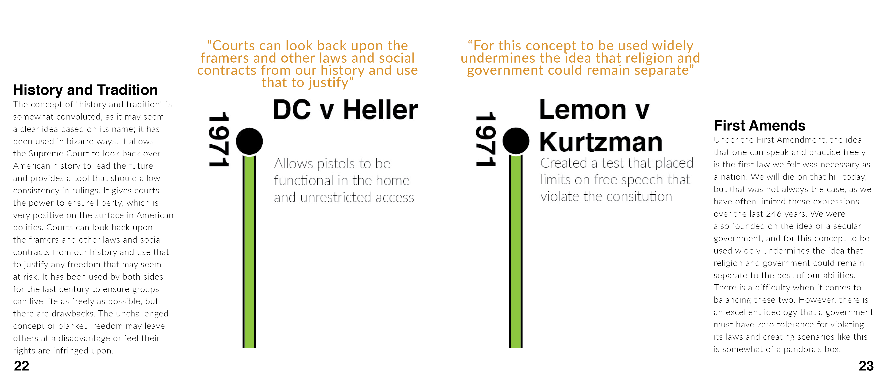
Interior spreads — Citizens United analysis and Second Amendment history
Production
The final publication was printed at 8.5″ × 9.5″ on semi-gloss premium paper at 160gsm, printed in CMYK and coverstitched. The 50-page book was produced at a cost of roughly 90 Euro per copy.
The Outcome
The Creeping Body presents the argument that the Supreme Court functions as a policy-making branch — one that can define its own jurisdiction, override state courts, and reshape constitutional rights without meaningful external oversight. From Lochner to Citizens United to Bruen, the pattern is consistent.
The publication was completed as a long-form editorial project, combining original political analysis with designed timelines and typographic treatment that makes constitutional law tangible and urgent.
50
Pages of original research and editorial design
4
Interconnected essays on judicial overreach
130+
Years of legal history traced through visual timelines